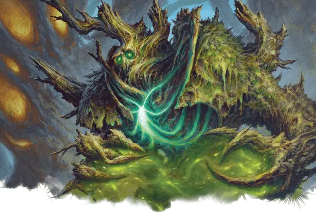

Маг клятвы с Визерблума
Witherbloom Pledgemage
Маленький или Средний Гуманоид (Друид), любое мировоззрение

Класс Доспеха 12 (15 в Громогласной форме)
Хиты 66 (12к8 + 12)
Скорость 30 футов
| мод | спас | ||
|---|---|---|---|
| СИЛ | 10 | +0 | +0 |
| ЛОВ | 15 | +2 | +2 |
| ТЕЛ | 13 | +1 | +3 |
| мод | спас | ||
|---|---|---|---|
| ИНТ | 14 | +2 | +2 |
| МДР | 17 | +3 | +5 |
| ХАР | 11 | +0 | +0 |
Навыки Восприятие +7, Медицина +5, Природа +6
Иммунитет к урону яд
Иммунитет к состояниям отравление
Чувства пассивное Восприятие 17
Языки Общий, и еще два любых языка
Опасность 4 (1100 опыта)
Бонус мастерства +2
Особенности
Регенерация. Маг клятвы восстанавливает по 5 хитов в начале каждого своего хода, если у него остался хотя бы 1 хит.
Зелёный талисман. В конце 10-минутного ритуала маг клятвы может прикоснуться к одному согласному существу (включая самого себя) и наделить его маленьким талисманом, наполненным магией. Получив талисман, существо получает 10 временных хитов и может добавлять 1к6 к своим броскам инициативы, пока носит талисман. Эти преимущества длятся в течение 1 часа или до тех пор, пока маг клятвы не совершит другой ритуал для дарования другого талисмана. Когда преимущества истекают, талисман рассыпается в прах.
Действия
Шипастая лоза. . Рукопашная атака заклинанием: +5 к попаданию, досягаемость 15 футов, одна цель. Попадание: 8 (1к10 + 3) колющего урона плюс 18 (4к8) урона ядом. Если целью является существо Большого размера или меньше, маг клятвы может притянуть его на 10 футов ближе к себе.
Использование заклинаний. Маг клятвы накладывает одно из следующих заклинаний, используя Мудрость в качестве базовой характеристики (Сл спасброска от заклинаний 12):
• Неограниченно: искусство друидов [druidcraft], уход за умирающим [spare the dying];
• 1/день каждое: защита от смерти [death ward], бесследное передвижение [pass without trace], разговор с растениями [speak with plants].
Бонусные действия
Громогласная форма (1/день). Маг клятвы превращается в аватара из растений и теней. Находясь в этой форме, маг клятвы добавляет свой модификатор Мудрости к своему КД, если он не носит ни доспехи, ни щит, и он с преимуществом совершает броски атаки по любому существу, у которого хиты ниже максимума. Эта форма длится 1 минуту или до тех пор, пока хиты мага клятвы не уменьшатся до 0.
Реакции
Всплеск увядания. Когда маг клятвы видит, что у существа в пределах 30 футов от него хиты опускаются до 0, маг клятвы направляет израсходованную жизненную эссенцию и нацеливается на другое существо, которое он может видеть в пределах 30 футов от себя. Цель должна преуспеть в спасброске Телосложения Сл 13, иначе станет отравленной на 1 минуту. Будучи отравленной таким образом, цель получает 3 (1к6) урона ядом в начале каждого своего хода. Цель может повторять спасбросок в конце каждого своего хода, оканчивая на себе действие эффекта в случае успеха.
Описание
Глубоко в туманах и болотах студенты факультета Визерблум — сначала в качестве учеников, а затем в качестве магов клятвы — изучают цикл жизни и смерти. Их магия подпитывается тем, что они называют эссенцией жизни: вездесущей энергией, которая проходит через живые существа.
Ученики Визерблума учатся готовить магические зелья и талисманы в дополнение к изучению заклинаний. Их магия варьируется от некротических теней и иссушающих вспышек яда до цветущих вспышек растительной жизни.
УЧЁНЫЕ ВИЗЕРБЛУМа
Факультет Визерблум изучает магию, присущую естественному циклу жизни и смерти. Профессора Визерблума подходят к философии с разных сторон, причем одна методология фокусируется на увядании, а другая - на росте.